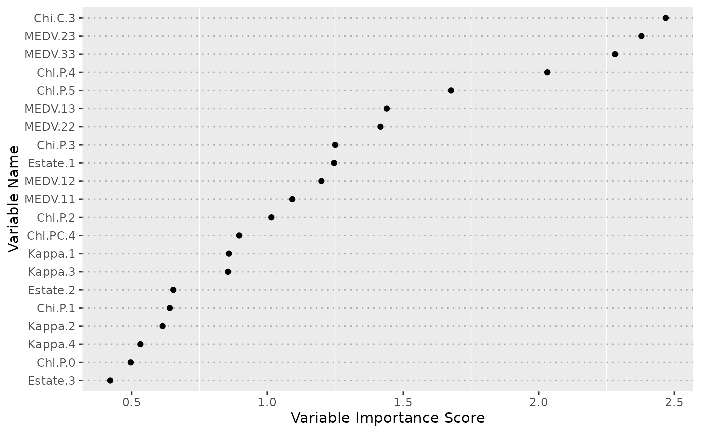

Measuring feature importance with ensemble partial least squares.
Usage
enpls.fs(
x,
y,
maxcomp = NULL,
cvfolds = 5L,
reptimes = 500L,
method = c("mc", "boot"),
ratio = 0.8,
parallel = 1L
)Arguments
- x
Predictor matrix.
- y
Response vector.
- maxcomp
Maximum number of components included within each model. If not specified, will use the maximum number possible (considering cross-validation and special cases where n is smaller than p).
- cvfolds
Number of cross-validation folds used in each model for automatic parameter selection, default is
5.- reptimes
Number of models to build with Monte-Carlo resampling or bootstrapping.
- method
Resampling method.
"mc"(Monte-Carlo resampling) or"boot"(bootstrapping). Default is"mc".- ratio
Sampling ratio used when
method = "mc".- parallel
Integer. Number of CPU cores to use. Default is
1(not parallelized).
Value
A list containing two components:
variable.importance- a vector of variable importancecoefficient.matrix- original coefficient matrix
Author
Nan Xiao <https://nanx.me>
Examples
data("alkanes")
x <- alkanes$x
y <- alkanes$y
set.seed(42)
fs <- enpls.fs(x, y, reptimes = 50)
print(fs)
#> Variable Importance by Ensemble Partial Least Squares
#> ---
#> Importance
#> Chi.C.3 2.4683701
#> MEDV.23 2.3787962
#> MEDV.33 2.2815314
#> Chi.P.4 2.0315902
#> Chi.P.5 1.6766926
#> MEDV.13 1.4392556
#> MEDV.22 1.4159863
#> Chi.P.3 1.2510102
#> Estate.1 1.2467426
#> MEDV.12 1.2000973
#> MEDV.11 1.0926947
#> Chi.P.2 1.0155413
#> Chi.PC.4 0.8968577
#> Kappa.1 0.8588444
#> Kappa.3 0.8552669
#> Estate.2 0.6537099
#> Chi.P.1 0.6405966
#> Kappa.2 0.6140915
#> Kappa.4 0.5323162
#> Chi.P.0 0.4964470
#> Estate.3 0.4209405
plot(fs)
